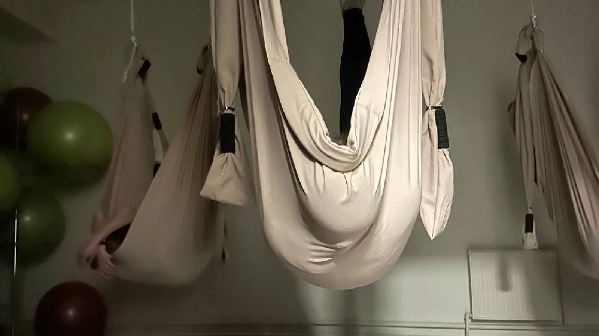
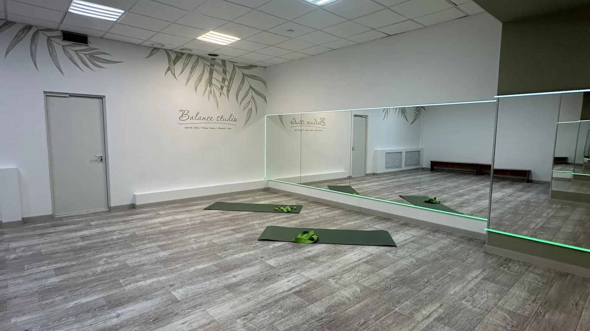
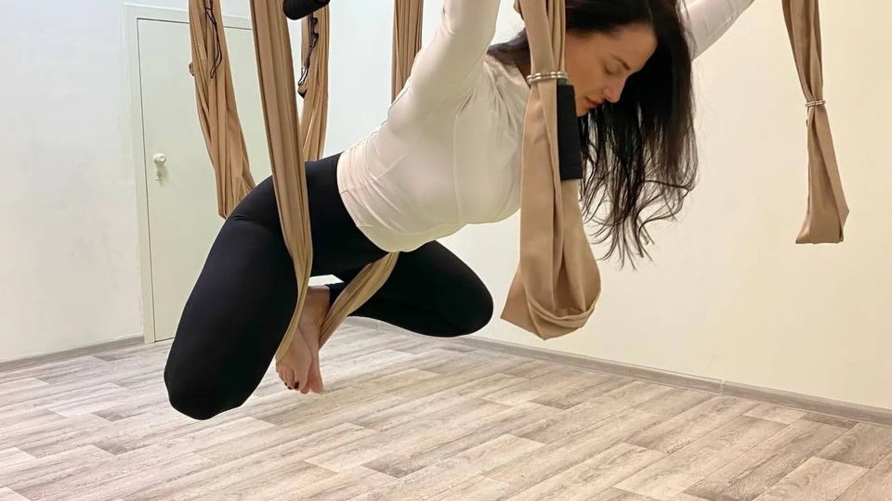
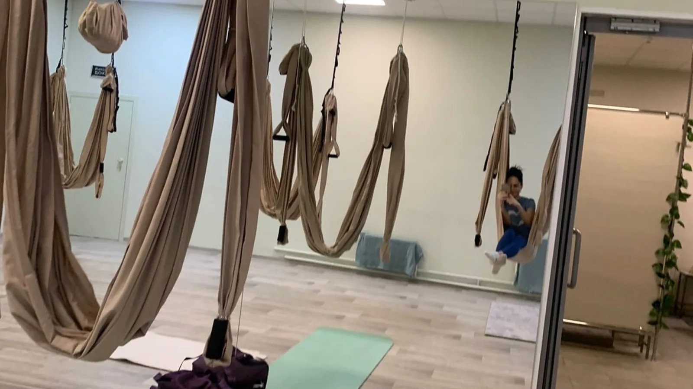
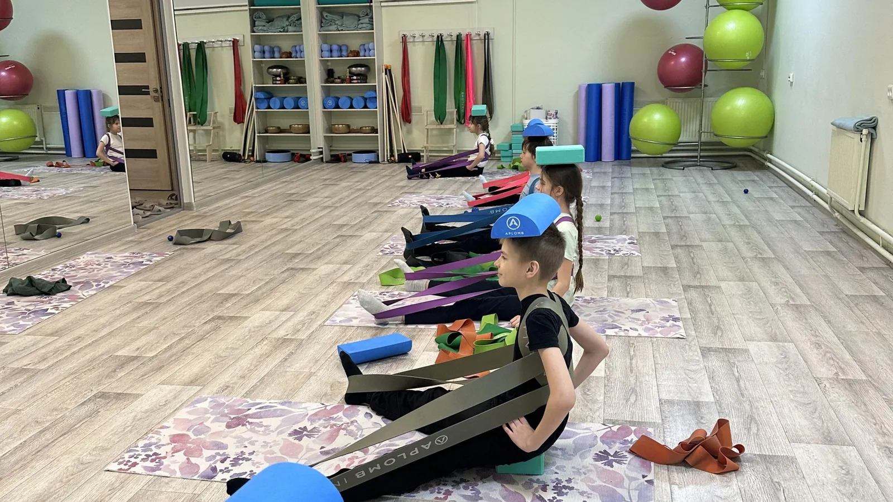
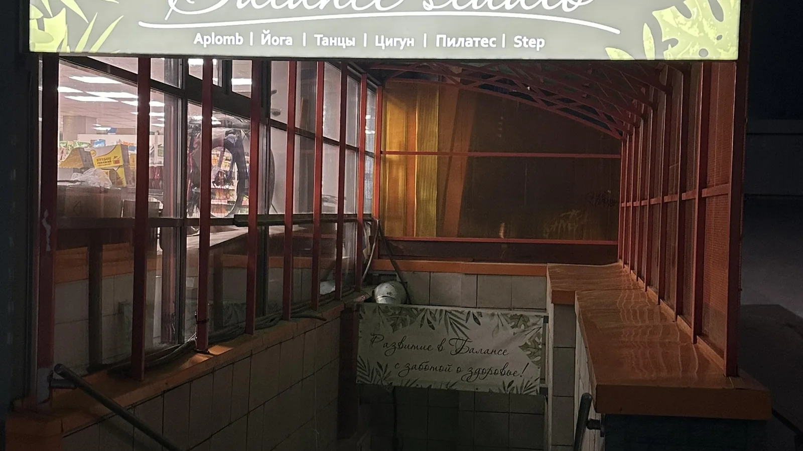

НовосибирскВыборная, 89/6цокольный этаж
Студия, где спина выдыхает
Гамаки, хатха, пилатес, растяжка и детские группы в цоколе дома на Выборной — сто метров от остановки НГПУ.
- Рейтинг5,0 в 2ГИС · 71 отзыв
- ЧасыПн–Пт 07:00–22:00
Сб–Вс 08:00–21:00 - Пробное300 ₽, для новых клиентов
- Дорога100 м от остановки НГПУ
О студии
Два зала в цоколе дома на Выборной
Один зал — с гамаками под потолком, второй — с зеркалами и ковриками. Занятия идут с раннего утра до вечера, по предварительной записи: расписание на день студия пишет в своём канале.
Сюда приходят не за рекордами. В отзывах повторяется одно и то же: спина перестала тянуть, нашлось время на себя, а после практики наливают чай — с вареньем, в компании тех, кто пришёл на соседний гамак.
Первое занятие стоит 300 ₽. Свой коврик можно не носить: студийные лежат в зале, а личный можно оставить на стеллаже до следующего раза.

Направления
Что здесь можно выбрать
Пробное занятие — 300 ₽ на любое направление. Дальше разовое посещение — 800 ₽ или абонемент.
Спина и осанка
- Здоровая спина
- Мягкая работа на мышцы спины и корпуса — без прыжков и резких движений. Есть взрослая группа и детская.
- МФР и здоровая спина
- Сначала роллы и мячи снимают зажимы, потом спокойная практика на осанку.
- Красивая осанка 14+
- Для подростков и взрослых: плечи, шея, постановка спины.
- Пилатес
- Медленно, на дыхании, глубокие мышцы. Хороший вход, если спина протестует против нагрузки.
Йога
- Йога в гамаках
- Аэройога: асаны целиком в гамаке или с опорой на него — полотно берёт часть веса на себя.
- Хатха-йога
- Классическая практика без спешки. Ведёт Алексей.
- Йога-нидра
- Глубокое расслабление лёжа в гамаке, с чашами и гонгом. Про голову больше, чем про тело.
- Растяжка и Aplomb
- Aplomb — работа на резинках, валиках и блоках; растяжка — спокойное вытяжение всего тела.
- Нейрогимнастика
- Зарядка для мозга и перезагрузка в середине дня.
Ритм и тонус
- Зумба
- Танцевальная тренировка, ведёт Марина. Про неё в отзывах пишут: «выходишь заряженная на все 100».
- Sculpt
- Силовая на всё тело с небольшим весом.
- FitRock
- Тренировка под рок-музыку — для тех, кому зал кажется скучным.

Как проходит час
Не «убьют на первой тренировке»
- 01Приходите за десять минут
Переобуться, оставить вещи, найти свой коврик или гамак. Администратор подскажет зал.
- 02Час или полтора спокойной работы
Тренер объясняет технику и держит темп так, чтобы вы не выпали из занятия на середине.
- 03Чай после практики
Стол с чаем и вареньем — не маркетинг, а часть студии: про него пишут почти в каждом отзыве.


Дети
Пока мама в гамаке
Детская «Здоровая спина» идёт пять дней в неделю — утром и днём. На фото — детская группа Aplomb: те же резинки, блоки и валики, что у взрослых, только задания короче.
В отзывах дети от пяти лет и первоклассники; точный возраст группы лучше уточнить у администратора.
Сетка — из канала студии, ноябрь. Перед визитом сверьтесь с расписанием на день.
Отзывы
Что пишут те, кто уже ходит
«После окончания дочкой детского сада я стала искать тренировки подобные ЛФК. У нас на районе с этим совсем плохо. За год тренировок укрепили мышцы спины, появилась гибкость и выносливость».
«Я нашла не просто занятия три раза в неделю. Зимой мы ходим на лыжах, учимся новому — например кататься на сноуборде. Недавно вернулись из Дагестана, куда ездили в эко-тур».
«Я перепробовала много разных студий… Все абонементы длятся 45 дней. Отдельная любовь — это гонг, поющие чаши и прочий инвентарь».
«Каждый раз на занятиях что-то новое. После каждого занятия горячее чаепитие, общение».
Цены
Сколько стоит
- Пробное занятиедля тех, кто в студии ни разу не был
- 300 ₽
- Разовое посещениелюбое направление, без обязательств
- 800 ₽
- Абонементмесячный; точную сетку уточняйте у администратора
- от 2 800 ₽
Запись
Записаться можно в один клик
Запись ведёт администратор — в Telegram, MAX или ВКонтакте. Напишите, какое направление и когда вам удобно: подберут группу и время. Если проще позвонить, телефон работает в часы студии.
Оплата: картой, наличными, переводом или по QR-коду.

Как найти
Выборная, 89/6
- Адрес
- Выборная ул., 89/6, цокольный этаж. М-н Энергостроителей, Октябрьский район.
- Вход
- С улицы, лестница вниз под вывеской студии. Автоматическая дверь, вход частично доступен на инвалидной коляске.
- Транспорт и парковка
- Остановка «НГПУ» — 100 метров. У дома парковка на 32 места.
- Часы
- Пн–Пт 07:00–22:00, Сб–Вс 08:00–21:00. Приём по предварительной записи.
- Телефоны
- +7 (952) 902-88-55 · +7 (923) 151-15-15
- Онлайн
- Telegram: @BalanceStudio54канал студииMAXВКонтакте
- Карточка
- Студия «Баланс» в 2ГИС